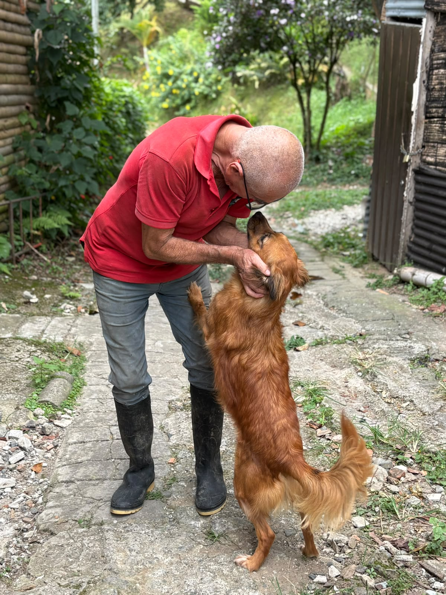

{{ t.hero.kicker }}
{{ t.hero.title }}
{{ t.hero.sub }}
{{ t.impact.kicker }}
{{ t.impact.title }}
{{ stat.n }}
{{ stat.l }}
{{ t.aboutTeaser.kicker }}
{{ t.aboutTeaser.title }}
{{ t.aboutTeaser.body }}

{{ t.featured.kicker }}
{{ t.featured.title }}
{{ t.about.kicker }}
{{ t.about.title }}
{{ t.about.lead }}

{{ t.about.storyTitle }}
{{ t.about.story1 }}
{{ t.about.story2 }}
{{ t.about.story3 }}
{{ t.about.valuesTitle }}
{{ v.t }}
{{ v.d }}
{{ t.adopt.kicker }}
{{ t.adopt.title }}
{{ t.adopt.lead }}
{{ t.adopt.note }}
{{ t.donate.kicker }}
{{ t.donate.title }}
{{ t.donate.lead }}
{{ t.donate.bank.title }}
{{ t.donate.bank.body }}
{{ r.k }}
{{ r.v }}
{{ t.donate.kind.title }}
{{ t.donate.sponsor.title }}
{{ t.donate.sponsor.body }}
{{ t.contact.kicker }}
{{ t.contact.title }}
{{ t.contact.lead }}
WhatsApp+57 318 856 7400
Instagram@hogardoncarlitos
{{ t.contact.locLabel }}{{ t.contact.locValue }}